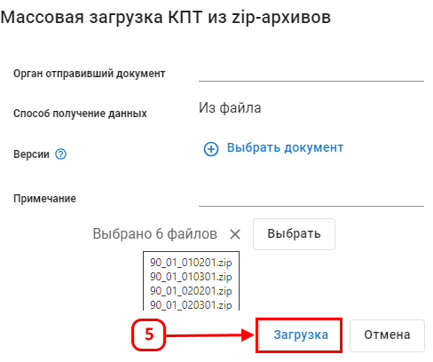

Массовая загрузка КПТ из zip-архивов
Функция позволяет автоматизированно создать и заполнить карточки документов на основе указанных архивов, с целью импорта кадастровых данных в слои на карте.
Для массовой загрузка КПТ из zip-архивов перейдите в раздел «Библиотеки документов» (2).
Перейдите в библиотеку «КПТ» (3).

В библиотеке создайте папку.
Перейдите в папку и нажмите (4).
Заполните атрибуты.
Выберите zip-архивы.
Нажмите кнопку (5).

В результате будут созданы документы с выбранными zip-архивами.